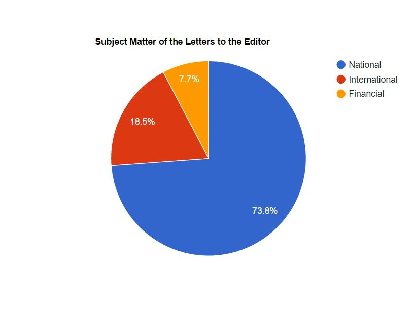

Letters to the Editor in the 1905 Egyptian Gazette
Through the existence of newspapers, expressing opinions has become more acceptable and has developed over time into dedicating entire sections of the newspaper to it. These opinions formally come from the editors of the paper in the forms of editorials and the readers of the paper in the form of Letters to the Editor. Within the Egyptian Gazette in 1905, there are a wide selection of the Letters to the editor that were published and I wanted to examine them as a whole to hopefully gain some insight on what the readers of the Egyptian Gazette are concerned about. Were the primarily British readers more interested in the financial content of the newspaper? Alternatively, did they want make a point known about the culture in Alexandria at the time? What follows is an examination of peoples that are not talked about in the historical mainstream, not men with fancy hats who rule over others, but a more common folk.
Before starting, it would be beneficial to go over the process that I used to collect the data I found regarding these letters. Before I started querying the issues, I wanted to skim through multiple weeks to see what sections of the newspaper were common and had something that stood out to me. I look through my week, spanning from September 18 to September 23, along with the weeks that were finished up by some classmates I knew in class. Initially, I took interest in the analysis of orchestra performances in Alexandria, seeing what composers were most popular in the city and what groups were being utilized most often (military bands, community orchestras, national orchestras, etc). Querying for this information was inconclusive, even after extensive manipulation of the queries. This led me to pick the letters to the editor. They had a more common appearance in the paper and had a more standard lay out in the issues throughout the year. After compiling the most recently updated issues of the paper into a project in Oxygen Text Editor, I started querying multiple terms in the boilerplate header for the letters. I looked for terms such as “editor”, “free discussion”, and “fair play”, as these terms appeared to be more common in letters to the editor header than any other article I had read. This resulted in far too many results to look through, a lot of which had nothing to do with what I wanted to find, much of it reporting on rival newspapers or correspondents. I decided to be more specific, targeting the header itself using the //div[@type="item"][contains(., 'LETTERS TO THE EDITOR')] query. Not yielding the results I had expected, I decided to make it even broader and look in every div regardless of type using //div[contains(., 'LETTERS TO THE EDITOR')]. This worked fine, resulting in roughly 45 actual letters to the editor. Still expecting to see more I decided to look for more specifics in the boilerplate. I later found out that two boilerplates had been made for the heading of the letters to the editor. One the used “Letters” and another that specified a single letter “Letter to the Editor”. I queried that exactly headline using //div [contains(., 'LETTER TO THE EDITOR')] and managed to find an additional 20 letters. With a total of 65 letters accounted for, I decided to move into the analysis.
After looking through each of the letters published in the newspaper, some things became apparent very quickly. The vast majority of these the people writing to the Egyptian Gazette utilize this section as a way to discuss Local/National problems. They most often respond to a previous issue of the Gazette and start posing an opposite viewpoint to what the writer of the paper wrote. One repeating occurrence in this section is complaints about the “savages” in Egypt, which, in most of cases, is referring to the non-educated native Egyptian population of Alexandria. In one letter, a Mr. “A. Mermaid” is complaining about the indecency of Arab families and Low-class Europeans near his bathing box. He finishes his rant: “Egypt is no doubt improving for the Egyptians, but the Egyptians are not improving it. Among the many things that Lord Cromer is having taught to the Egyptians might it not be advisable to include decency!!!”.
Another thing that seemed to pop up within the letters to the editor was the concern that many readers had regarding the treatment of animals. For example, during the latter half of May and early June, multiple letters were published regarding Pigeon Shooting. A sporting club in England had banned pigeon shooting and many readers were writing in to try to convince the Alexandria Sports Club to ban the sport as well. All of the letters published were in favor of banning the act, calling it a game rather than a sport. One thing that stuck out to me regarding these responses was that no one had included their real name as the writer, always using a pseudonym (some being comedic, such as “Disgusted”, “Clay-Pigeon”, or “British Pigeon”).
Additionally, the people who wrote to the editor of the Egyptian Gazette had at least some concern about the public good. Occasionally the letters brought up the matter of public goods, such as new water pumps, public institutions of learning, and Anglo-Egyptian Hospitals but it could be reasonably assumed that these public goods were to benefit the British rather than the native Egyptians. Furthermore, many of the letters regarded experiences of luxury, such as trying to get the Egyptian Gazette to contain a full review of an Opera or the suggestion that train companies should provide free Tea to the riders of their trains.
International News was a less common topic discussed by the letters published in the Egyptian Gazette, but was still brought up enough to be noticeable. One notable letter that was published regarded a Swedish national requesting that the editor add new information about what the newspaper called the “Scandinavian Quarrel”, stating that the Swedish Government would not accept the frontier fortresses established by Norway in the late 1890s.
Finally, a small amount of the letters talked about financial occurrences, including a speculation of the change of prices at the Suez Canal and the long lasting effects of the Capitulations. The amount of financial discussion surprised me as the majority of the Egyptian Gazette contains financial information and advertisements, whereas the letters to the editors did not.
I borrowed part of the Schema from the TEI encoding process and used that to put the analysis into a visual format. I utilized the scope tags “Financial”, “International”, and “Local” but decided to change the Local scope into a “National” scope as many of the letters regarded many parts of Egypt rather than just simply Alexandria. After establishing these categories, I went through each of the letters that I found and sorted them into their tag. I chose these tags specifically because of their ties to the normal layout of the newspaper itself. The three main sections of the newspaper were Local/General, International, and Finance, so presumably, the readers of the paper had at least some interest in predominant topics or else the paper would not bother producing new articles every day.

From this categorization, I found that the vast majority of the published letters to the editor regarded things going on within Egypt itself, coming in with just about 74% of the total published letters. Letters regarding international topics were significantly less popular than national topics, comprising about 19% of the letters published. Surprisingly, the smallest category was Financial, only being mentioned in five letters, making up about 7% of the total letters published.
In conclusion, I found that the readers of the Egyptian Gazette preferred to discuss more cultural and local topics than either International or Financial topics, something that you would not have gleamed from just glancing at the average content of the Egyptian Gazette, a paper primarily produced for the consumption of businessmen of Alexandria. Additionally, the common man that reads and responds to this newspaper is not the average person present in Alexandria in 1905. The person that would read and possibly respond to the paper would most likely be a non-native of Egypt, a foreign businessman. Throughout the length of this course, the concept of Microhistory has become approachable. Microhistory tries to take smaller events and individuals and make a compelling observation with them, hoping to get away from the approach of using “great men” to define history. While I believe my approach in trying to find the more about the “smaller units” in Egypt using the letters is a step in the right direction, I can see how it is still hindered by its confined group of readers. The readers/writers of these letters may be a “smaller unit” than Lord Cromer, but these businessmen/educated men are still a minority in Egypt, and trying to make any overarching generalizations based on these newspaper readers would not be accurate for the society in Egypt, only the minority that actually were able to read the paper.
Finally, regarding the shortcomings of Digital methods in Microhistory, the amount of labor to get a searchable database is considerably large. It definitely requires combined effort for large works and a solid schema needs to be developed and cemented before the encoding begins, or else massive inconsistencies will arise when trying to query the data later. However, if these are all worked through, and a clean database is established, the power to query huge amounts of data to conduct research is incredibly effective. It opens up the possibility of more quantitative data to support historical research, previously something more common in the hard sciences. In the end, Digital Methods are the way to go, but the processes just needs to be established more clearly for each project that the methods are used in.
Alexander Amorello
Student
The author, a student at Florida State University, was enrolled in the digital microhistory lab in fall 2016.